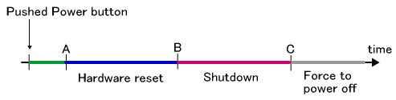
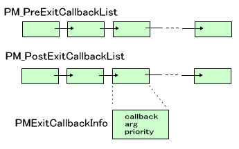
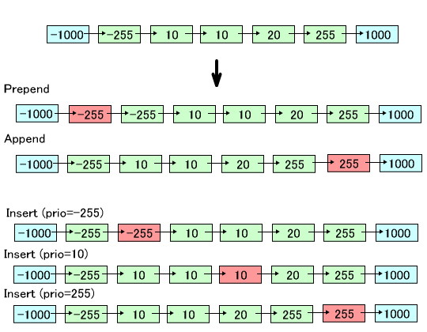

This page provides explanations related to TWL hardware behavior.
The TWL system has the following states in which applications will be ended.
Although as outlined above there are many states that will end the application, the key points to consider in shutdown processing are the states that cause hardware reset or shutdown. These have been narrowed down to the two explained below.
- Hardware Reset
- - The Power Button is pressed quickly
- ThePM_ForceToResetHardwarefunction is calledPM_ForceToResetHardwareis called internally by functions such asOS_RebootSystem,OS_JumpToSystemMenu,OS_JumpToWirelessSetting,OS_JumpToInternetSetting, andOS_JumpToEULAViewer. These actions will cause a hardware reset. After a hardware reset is executed, the display returns to the system menu, the unit restarts itself, or another application is launched.
- Shutdown
- Shutdowns occur for the following reasons.
- The Power Button is held down
- TheOS_ForceToPowerOfffunction is called
- The battery has completely discharged
- A Game Card is removed while the unit is sleeping
Shutdown processing will turn OFF the power. (However, applications that do not require shutdown processing will simply operate until the battery is depleted without shutting down, so it will appear as though power has suddenly cut off.)
- Program Halt (endless loop)
- The application will halt when the
OS_Panic,OS_Terminate, orOS_Exitfunction is called. These will simply place the CPU in a halted state, loop execution, or otherwise stop the application from performing any further meaningful operation. In DEBUG builds only, identical behavior occurs when theSDK_ASSERTfunction evaluates to a negative result. However, these are all called for debugging purposes during development or called because of problems in the program. In retail products, with one exception, none of these states should occur. The one exception—removing the Game Card while the application is running—causes theOS_Terminatefunction to be called internally.
- Debugger Halts
- When a program is running on the IS-TWL-DEBUGGER, the program will halt if an exception occurs because of attempts to access an illegal address or execute an undefined instruction. If an exception occurs while running on an actual console, execution will loop in the exception handler. Either way, this will probably not occur with product versions. Additionally—although this is an obvious case—the program will halt if a developer clicks the Stop TWL-CPUs button in the debugger while the program is running, even though no exception occurs.
- Other
- If the battery lid is opened and the rechargeable battery is suddenly removed while the console is operating on battery power, the internal voltage will drop due to the lack of a power supply. The system may halt due to other unexpected reasons, such as hardware damage. We do not consider these here.
The Power Button on the TWL system will cause a hardware reset, shutdown, or hard power-off to occur, depending upon the length of time that the button is held down before being released.
This is described in the following figure. When the Power Button is pressed, nothing will happen if it is released before A; a hardware reset will occur if it is released between A and B; a shutdown will occur if it is released between B and C; and the power will be forced to turn OFF immediately if the button continues to be held down past C. This hard power-off will occur even if the button is not released.

If the Power Button on NITRO hardware is pressed, power is turned off immediately, regardless of how long the button is pressed.
In addition, if the PM_ForceToResetHardware function is called internally by functions such as OS_RebootSystem, OS_JumpToSystemMenu, OS_JumpToWirelessSetting, OS_JumpToInternetSetting, or OS_JumpToEULAViewer, a reset using the Power Button is ignored.
The exit callback is defined as follows:
typedef void (*PMGenCallback) (void *);
It is a void function that takes a single void* argument.
This exit callback will be invoked when a hardware reset or shutdown occurs. Multiple exit callbacks can be registered. They are internally stored in a list, and will be called in order when necessary. There are two callback functions: a pre-process shutdown callback and a post-process shutdown callback.
The shutdown callback process only executes once. For example, if shutdown processing due to the Power Button being pressed or the voltage level going down is underway, and the Power Button is pressed again, it is ignored.

The following explains the timing with which the functions in the two callback lists are called.
In the Power Button figure above, the microprocessor sends an interrupt to the ARM7 when the Power Button has been held down until A. At this point, we do not know whether a hardware reset or a shutdown will occur, but we are certain that the application will exit.
However, when the PM_SetAutoExit function has configured the program to not exit automatically, the ARM9 will not send the completion callback for exit preparations to the ARM7 (step 3 above) until the application calls the PM_ReadyToExit function. When the PM_ReadyToExit function is called, it internally invokes the post-exit callback and sends the completion notification for exit preparations to the ARM7. The current setting can be obtained with the PM_GetAutoExit function.
In other words,
PM_ReadyToExit function called by the user. Therefore, it is called in the same mode as the PM_ReadyToExit function.
There are two exceptions. The first exception is when the Power Button is pressed after the function used for application jump has been called. In this case, the application jump is cancelled, and control moves to processing when the Power Button has been pressed. (Hardware reset or shutdown is executed when the button is released.) The pre-process callback is not called. Only the post-process callback is called. This is done because the user has presumably already executed a process corresponding to the pre-process callback before using the application jump. The other exception is when the microcomputer detects low-level battery before reset is actually applied when a function that uses application jump has been called. In this case as well, the pre-process callback is not called, and control moves to the shutdown process due to the low battery.
See the Shutdown Caused by Low Battery section of Overview: Battery for details.
Here the microprocessor internally sends an interrupt to the ARM7. The ARM7 sends exit notification to the ARM9, and the rest consists of similar calls to exit callbacks as occur when the Power Button is pressed. However, this exit processing is not performed for applications (such as card applications) not requiring exit processing. With these, no interrupt is triggered.
This invokes the callbacks registered on the post-processing callback list. The hardware then powers down.
The pre-processing callback is not invoked.
This invokes the callbacks registered on the post-processing callback list. The hardware will then be reset.
The pre-processing callback is not invoked.
Callbacks have configurable priority levels. Applications can use priorities ranging from -255 (PM_CALLBACK_PRIORITY_MIN) to 255 (PM_CALLBACK_PRIORITY_MAX). The system (such as the SDK library and middleware) can use priorities ranging from -65,535 (PM_CALLBACK_PRIORITY_SYSMIN) to 65,535 (PM_CALLBACK_PRIORITY_SYSMAX). These priorities are used only to determine the order of the callback list. Items having smaller values are placed closer to the start of the list.
Configure a callback function and its arguments in a PM_SetExitCallbackInfo callback information structure, and register that structure to the list.
It can be registered in one of three ways.
PM_PrependPreExitCallback, PM_PrependPostExitCallbackPM_AppendPreExitCallback, PM_AppendPostExitCallbackPM_InsertPreExitCallback, PM_InsertPostExitCallbackExample:
This shows where exit callbacks are registered using thePM_Prepend*,PM_Append*, andPM_Insert*functions on a list consisting of callbacks with priority -1000, -255, 10, 10, 20, 255, and 1000. Here thePM_Insert*functions illustrate using priorities of -255, 10, and 255, respectively.

The configured callbacks can be removed using the PM_DeletePreExitCallback and PM_DeletePostExitCallback functions.
The PM_DumpExitCallback function is used in debugging to display the list of callbacks. It will not do anything in FINALROM builds.
The exit callbacks registered in the SDK perform the following operations in the following order.
SNDEX_SetIgnoreHWVolume function.
These callbacks are registered on the post-processing callback list, so control will pass through them even in a power disruption or forced reset.
2009/02/03 Added a description of the process in SNDEX in the shutdown callback to be registered.
2008/12/11 Added the fact that the shutdown callback is called only once.
2008/11/04 Added a description of behavior when the Power Button is pressed during an application jump.
2008/09/12 Added an item describing the low battery callback.
2008/09/11 Added an item describing automatic shutdown.
2008/07/15 Changed the priority levels for users from 0 to 255 to -255 to 255.
2008/06/11 Initial version.
CONFIDENTIAL